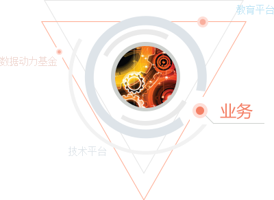

简称DT.(Data Technology)
系大华南IT高管共赢圈联合北大、中大、暨大等高校管理学专家学者，华南知名企业CEO、CIO、IT高管、媒体等群体于2015年1月1日发起成立的，全力打造的以社群为纽带、以研究为核心、以技术为引擎、以创投为助推器的专家型创新服务生态体系。
是DT时代IT互联网创新实战家们进行数据应用与互联网+转型创新理论研究、验证创新理论、进行知识传播分享、专业孵化运营、企业转型升级、基金投资运营的专家型创投平台。
DT是一个超级链接器，一个“资源池”一个“能力池”
DT是一个典型的科技型、专家型创投服务平台
DT旗下业务